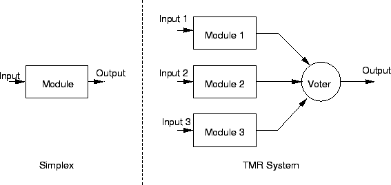
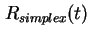
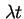
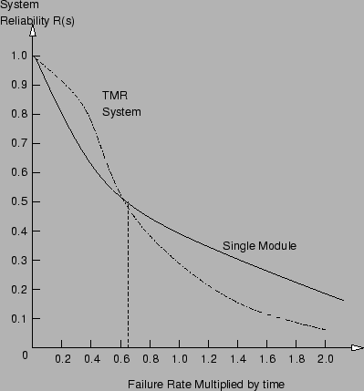
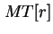
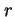
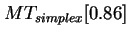
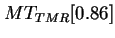
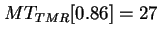
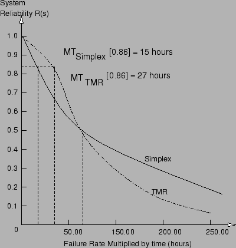

Next: แบบจำลองความสามารถในการคงการบริการ
Up: แบบจำลองมาร์คอฟ (ต่อ)
Previous: หัวข้อสำคัญในครั้งก่อน
Contents
Index
ในการประเมินประสิทธิภาพส่วนใหญ่ เราต้องการเปรียบเทียบประสิทธิภาพของทางเลือกต่างๆ ในบทนี้เราจะเปรียบเทียบความน่าเชื่อถือระหว่างระบบคอมพิวเตอร์เดี่ยว และ ระบบ TMR โดยสมมุติให้ตัวหยั่งเสียงส่วนใหญ่ (Voter) มีความน่าเชื่อถือเป็นอุดมคติ ระบบที่ทำการเปรียบเทียบทั้งสองระบบแสดงในรูป 13.1
Figure 13.1:
เปรียบเทียบระบบคอมพิวเตอร์เดี่ยว และระบบ TMR
|

|
ค่าเฉลี่ยก่อนการเสียหาย MTTF ของระบบนิยามเท่ากับ
 |
(13.1) |
เมื่อ R(t) เป็นค่าความน่าเชื่อถือของระบบ
โดยความน่าเชื่อถือของระบบคอมพิวเตอร์เดียวมีค่าเท่ากับ
 |
(13.2) |
ในขณะที่ความน่าเชื่อถือของระบบ TMR มีค่าเท่ากับ
 |
(13.3) |
ทำการอินทิเกรท
 และ
เราจะได้ค่า MTTF ของระบบเป็น
จะพบว่า MTTF ของ ระบบ Simplex จะมีค่ามากกว่า MTTF ของ ระบบ TMR
จากค่าขั้นต้น เราอาจสรุปได้ว่าระบบ TMR อาจไม่มีคุณสมบัติไม่ดีเท่าระบบ Simplex การสรุปดังกล่าวอาจไม่ถูกต้องขึ้นอยู่กับระยะเวลาที่ใช้งาน และการประยุกต์เฉพาะ
ในรูป 13.2 แสดงอย่างชัดแจ้งว่า MTTF ของ ระบบ TMR จะมีค่าน้อยกว่าระบบ Simplex ซึ่งแสดงอยู่ในรูปของค่าความน่าเชื่อถือเทียบกับ  จากรูปจะสังเกตุเห็นได้ว่าหลังจากค่าเวลาหนึ่งระบบ TMR จะมีค่าน้อยกว่าค่าความน่าเชื่อถือของระบบคอมพิวเตอร์เดียว
ค่า MTTF คือค่าพื้นที่ภายใต้กราฟ จะเห็นว่าในช่วงเวลาหนึ่ง ก่อนถึงจุดตัดของกราฟ ค่าความน่าเชื่อถือของระบบ TMR สูงกว่าค่าความน่าเชื่อถือของระบบ Simplex อยู่
Figure 13.2:
ค่าความน่าเชื่อถือเทียบกับ
|

|
ในการเปรียบเทียบ เราอาจใช้เวลาในการปฏิบัติการ (Mission Time) มาพิจารณาคู่กับ MTTF. เวลาในการปฏิบัติการ  คือระยะเวลาที่ระบบมีความน่าเชื่อถือต่ำกว่าระดับ  ตัวอย่างเช่น ระบบ Simplex ที่เป็นไปตามกฎของความเสียหายมีค่าความน่าเชื่อถือ เมื่อ
เวลามีความน่าจะเป็นดังกล่าวสามารถหาได้โดยการทำล็อกการึทึ่มทั้งสองด้านของสมการ และทำการจัดรูปสมการให้เหมาะสม จะได้
การปรับปรุงช่วงเวลาปฏิบัติการสามารถคำนวณได้จากอัตราส่วนของเวลาปฏิบัติการของทั้งสองระบบ ตัวอย่างเช่น ต้องการเปรียบเทียบระบบสองคอมพิวเตอร์ระบบได้แก่ (1) ระบบ Simplex ที่มีคอมพิวเตอร์หนึ่งตัวและมีอัตราความเสียหาย เท่ากับ 0.01 ความเสียหายต่อชั่วโมง (2) ระบบ TMR ที่ใช้คอมพิวเตอร์ชนิดเดียวกันสามชุด โดยสมมุติให้เป็นไปตามกฎความเสียหายแบบ Exponential เราต้องการหาการปรับปรุงของช่วงเวลาการปฏิบัติการของระบบ TMR เมื่อเทียบกับระบบ Simplex ที่ค่าความน่าเชื่อถือ 0.86
ค่า
 สามารถคำนวณได้จากฟังก์ชั่นความเสียหายและ Exponential ดังต่อไปนี้
![\begin{displaymath}
MT_{simplex}[0.86] = \frac{-ln(r)}{\lambda}
= \frac{-ln(0.86)}{0.01} = 15.08~hours
\end{displaymath}](img976.png) |
(13.8) |
ค่า
 สามารถคำนวณได้สมการดังต่อไปนี้
จากการแก้สมการข้างบนเราจะได้ค่า
 ชั่วโมง ค่าการปรับปรุงค่าเวลาปฏิบัติงานมีค่าประมาณ 1.8 หรืออีกนัยหนึ่ง ระบบ TMR สามารถทำงานได้นานกว่าระบบ Simplex 1.8 เท่า ในขณะที่สามารถรักษาค่าความน่าเชื่อถือได้มากกว่า 0.86 ในรูป 13.3 แสดงแนวคิดของเวลาปฏิบัติงาน และการปรับปรุงเวลาปฏิบัติงาน สำหรับการเปรียบเทียบระบบ Simplex และ ระบบ TMR ที่อัตราความเสียหายเท่ากับ 0.01 ความเสียหายต่อชั่วโมง
Figure 13.3:
แนวคิดของเวลาปฏิบัติงาน และ การปรับปรุงเวลาปฏิบัติงาน สำหรับการเปรียบเทียบระบบ Simplex และ ระบบ TMR ที่อัตราความเสียหายเท่ากับ 0.01 ความเสียหายต่อชั่วโมง
|

|
Next: แบบจำลองความสามารถในการคงการบริการ
Up: แบบจำลองมาร์คอฟ (ต่อ)
Previous: หัวข้อสำคัญในครั้งก่อน
Contents
Index
Vara Varavithya
2002-03-09